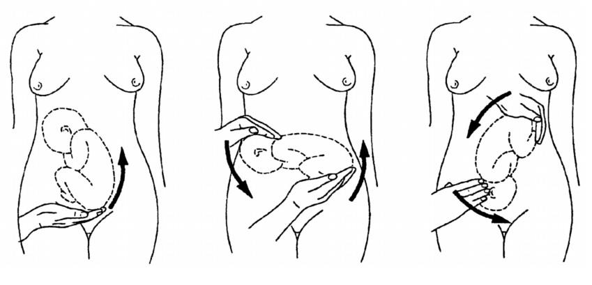
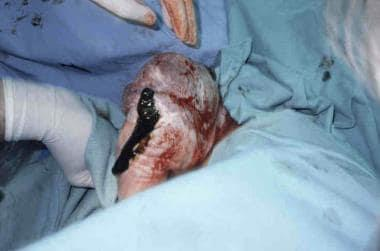
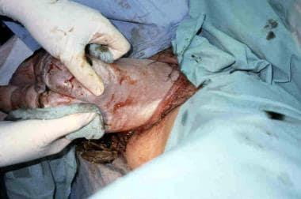
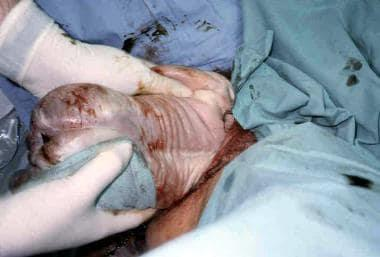
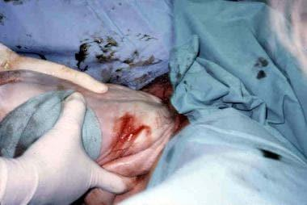
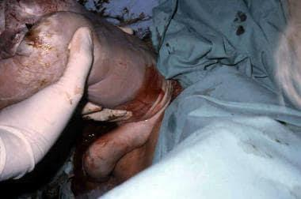
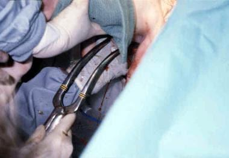

Fetus in a longitudinal lie in which the presenting part is the buttocks or feet (podalic part). Occurs in 3-4% of all deliveries. This chapter covers etiology, types, positions, diagnosis, mechanism of labor, ECV, vaginal breech delivery, complications, and management of complicated breech.
To understand the definition of breech malpresentation.
To be able to explain possible etiologies of such malpresentation.
To be able to outline the external cephalic version.
To be able to describe the diagnosis and management of breech malpresentation.
To be able to ouline the complications of breech malpresentation. (sic — source typo preserved)
2Definition & Incidence
Breech presentation is a fetus in a longitudinal lie in which the presenting part is the buttocks or feet (podalic part).
📊 INCIDENCE
This occurs in 3-4% of all deliveries.
Breech is the most common malpresentation at term but decreases with advancing gestational age as most fetuses spontaneously turn to cephalic by 36-37 weeks.
💡 CLINICAL PEARL — Why "podalic"?
"Podalic" comes from Greek pous/podos = foot. The podalic part is whatever is presenting at the pelvic inlet — in a breech, that's the buttocks (frank), buttocks + feet (complete), or a foot/feet (footling).
3Etiology & Predisposing factors
📐 ACCOMMODATION THEORY
The fetus is usually adapted to the pyriform shape of the uterus with the large buttock in the fundus and the smaller head in the lower uterine segment.
When this normal accommodation is disrupted — by prematurity, excess fluid, malformed uterus, or a fetal abnormality — the fetus may end up presenting breech.
Predisposing factors (source lists 8)
1. Prematurity
Smaller fetus, easier to flip — breech is more common in preterm.
2. Uterine malformations or fibroids
Distorted uterine cavity prevents the fetus from settling into the normal cephalic lie.
3. Polyhydramnios
Excess fluid → fetus is mobile and can flip to breech.
4. Placenta previa
Placenta in the lower segment blocks the head from engaging → fetus sits breech.
5. Fetal abnormalities
e.g., CNS malformations, neck masses, aneuploidy — affect the way the fetus fits.
6. Multiple gestations
Crowding + one twin's presentation can affect the other.
7. Cord around the neck
Nuchal cord can prevent the head from descending into the pelvis.
8. Pelvic tumors
Space-occupying lesion in the pelvis blocks head engagement.
4Types of breech
The source enumerates 4 types, distinguished by the position of the hips and knees of the fetus.
Frank breech
50-70% of breech presentations
Hips flexed, knees extended (pike position). The legs are extended along the fetal abdomen with feet near the head. The commonest type.
Complete breech
5-10% of breech presentations
Hips flexed, knees flexed (cannonball position). The fetus is sitting cross-legged, with feet beside the buttocks.
Footling / incomplete breech
10-30% of breech presentations
One or both hips extended, foot is presenting. One or both feet present below the buttocks. Higher risk of cord prolapse.
Knee presentation
(rare — no % given in source)
Hip extended, knee flexed on one or both sides. The knee presents at the pelvic inlet. Rare in practice.
⚠ EXAM NOTE — Why footling is dangerous
In a footling breech, the presenting part is a small foot — it does not fill the pelvic inlet, so the umbilical cord can slip past it and prolapse. This is one of the standard indications for cesarean section (see §18).
5Positions
The denominator is the sacrum.
In a breech, the sacrum is used as the reference point (denominator) for naming the position — analogous to the occiput in a cephalic presentation.
4 positions of the sacrum (LSA / RSA / LSP / RSP)
LSALeft Sacro-Anterior — sacrum points to the mother's left anterior quadrant
RSARight Sacro-Anterior — sacrum points to the mother's right anterior quadrant
LSPLeft Sacro-Posterior — sacrum points to the mother's left posterior quadrant
RSPRight Sacro-Posterior — sacrum points to the mother's right posterior quadrant
💡 CLINICAL PEARL — Commonest position is LSA
The left sacro-anterior (LSA) position is the commonest position for a breech fetus — i.e., the fetal sacrum is directed toward the mother's left front. This is the position most often described in mechanism-of-labor discussions.
6Diagnosis
Diagnosis is made by clinical examination (palpation, auscultation, pelvic exam) and confirmed by ultrasonography.
📋 Palpation — 4 grips (Leopold maneuvers)
Fundal level
Corresponds to the period of amenorrhea except in frank breech, the fundal level may be lower due to early engagement.
Fundal grip
The head is felt as a smooth, hard, rounded & ballottable mass in the fundus.
Umbilical grip
In sacro-anterior position, the back is felt on one side & the limbs on the opposite side. A depression corresponds to the neck may be felt above the umbilicus.
In sacro-posterior position, the limbs are felt on both sides of the midline.
First pelvic grip
The breech is felt as a smooth, soft mass continuous with the back, not ballottable and not tender. In frank breech, the breech may be felt due to early engagement.
🔊 Auscultation
Fetal heart heard higher in the abdomen (because the fetal chest is high in the uterine fundus in a breech).
🤚 Pelvic examination (PV)
Head is not felt in the pelvis, very thick meconium after rupture of membranes.
🖥 Ultrasonography
Confirm the diagnosis, identify the type of breech and it reveals any fetal or uterine abnormalities that may predispose to breech presentation.
7Figure · Leopold maneuvers (Diagnosis by palpation)
Source Image · img-000

Figure 1 — Three-panel instructional line drawing of the Leopold maneuvers (a subset: maneuvers 2, 3, and 4), the classic bedside technique used to determine fetal lie, presentation, position of the back, and engagement. Left panel: the third maneuver — suprapubic palpation to identify the presenting part at the pelvic inlet. Center panel: the second maneuver — bilateral uterine palpation to locate the fetal back and limbs. Right panel: the fourth maneuver — deep pelvic grip to assess engagement and identify the cephalic prominence. The fetus is shown in dashed outline to indicate its position inside the uterus. This illustration is the visual companion to §6 Diagnosis (palpation).
8Mechanism of labor in breech presentation (sacro-anterior position)
The mechanism of labor in breech is described for the sacro-anterior position and proceeds in three stages: buttocks, shoulders, head.
A) Buttocks
Descent
Engagement: by the bi-trochanteric diameter 10 cm, in the oblique diameters 12 cm of the pelvis.
Internal rotation: of the anterior buttock through 1/8th of a circle so that the bitrochanteric diameter comes to lie in the anteroposterior diameter of the pelvic outlet.
The anterior buttock hinges under the symphysis pubis.
By lateral flexion of the fetal spine over the symphysis pubis, the posterior buttock is delivered.
By straightening of the spine, the anterior buttock is also delivered.
External rotation occurs, so that the sacrum lies anterior.
B) Shoulders
The shoulders engage by the bisacromial diameter (11.8 cm) in the same oblique diameter of the pelvis as the buttock.
Internal rotation: when the anterior shoulder reaches the pelvic floor, it will rotate 1/8 of a circle anteriorly (as a result of levator ani contraction), so that the bisacromial diameter comes to lie in the anteroposterior diameter of the pelvic outlet.
The anterior shoulder hinges under the symphysis pubis.
By lateral flexion of the fetal spine over the symphysis pubis, the posterior shoulder is delivered.
By straightening of the spine, the anterior shoulder is also delivered.
C) Head
The head engages by the occipto-frontal diameter (11.5 cm) in the opposite (to the buttock & shoulder) oblique diameter of the pelvic inlet.
Internal rotation: the occiput rotates 1/8 of a circle in sacro-anterior position and 3/8 of a circle in sacro-posterior position.
The suboccipital region reaches the symphysis pubis.
The head is then delivered by flexion.
🚨 CRITICAL — The head is the most difficult part to deliver per vaginally
As the head is the most difficult part to deliver per vaginally, there are various methods to deliver it (covered in §9). Unlike the buttocks and shoulders, the head is a rigid, non-compressible structure that must pass through the pelvis with its smallest diameter (suboccipito-bregmatic) presenting — any deflexion risks entrapment.
9Methods to deliver the head
Three classical methods for delivering the aftercoming head in a vaginal breech delivery:
1. Jaw flexion and shoulder traction [Mauriceau-Smellie-Veit technique (MSV)]
Two fingers of the left hand are put on the maxilla to avoid dislocation of the jaw.
The index and ring finger of the right hand are placed on each shoulder while the middle finger is pressing against the occiput to promote flexion and act as a splint for the neck, preventing hyperextension and hence cervical spine injury.
Traction is commenced downwards and backwards till the nape of the fetus appears, the body is lifted towards the mother's abdomen.
2. Burns-Marshall Method
Let the baby hanging down by its own weight, and suprapubic pressure is given by the flat hand in the downward and backward direction.
As the nape of the neck is visible, grasp the feet and lift the body towards the mother's abdomen.
3. Forceps Delivery (Piper's forceps)
A specially designed forceps is applied to the aftercoming head. Detailed in §14 and §15 with source images.
10External Cephalic Version (ECV)
📋 Definition
Manipulation of the fetus to a cephalic presentation through the maternal abdomen aiming for vaginal delivery.
⏱ Timing
ECV should be offered from 37 weeks' gestation. In primiparous women, ECV can be offered from 36 weeks gestation.
🚫 Contraindications
1. Ruptured membranes.
2. Severe pre-eclampsia.
3. Abnormal cardiotocograph (CTG) or Doppler.
4. Lack of maternal consent.
5. Any absolute indication for caesarean section.
6. Multiple pregnancy (except after delivery of the first twin).
7. Scarred uterus.
8. Placenta previa or current or recent (within one week) vaginal bleeding.
9. Rhesus isoimmunization.
10. Lack of access to ultrasound, or capability to perform emergency cesarean section or equipment or personnel to perform fetal monitoring.
Perform an ultrasound to verify the presentation and any abnormality.
Perform a CTG prior to the procedure.
Use tocolysis.
Administer Anti-D immunoglobulin if the woman is rhesus negative.
Do not make more than four attempts at ECV, for a suggested maximum time of ten minutes in total.
Undertake CTG monitoring post-procedure.
11Vaginal breech delivery
✅ Criteria for a planned vaginal breech birth
Documentation of informed consent, including written consent from the woman.
Estimated fetal weight of 2500-3800 gm.
Flexed fetal head.
Emergency theatre facilities for doing CS.
Availability of suitably skilled healthcare professional.
Frank or complete breech presentation.
No previous cesarean section.
🚫 Contraindications for vaginal breech delivery
1. Cord presentation.
2. Fetal growth restriction or macrosomia.
3. Any presentation other than a frank or complete breech.
4. Extension of the fetal head.
5. Fetal anomaly incompatible with vaginal delivery.
6. Contracted pelvis.
7. Previous cesarean section.
📖 Methods of vaginal breech delivery
Spontaneous breech delivery
No traction or manipulation of the infant is used. This occurs predominantly in very preterm.
Assisted breech delivery
This is the most common type of vaginal breech delivery. The infant is allowed to spontaneously deliver up to the umbilicus, and then maneuvers are initiated to assist in the delivery of the remainder of the body, arms, and head.
Total breech extraction
The fetal feet are grasped, and the entire fetus is extracted. Total breech extraction should be used only for a noncephalic second twin; it should not be used for a singleton fetus.
12Assisted delivery technique — step by step
The fetal membranes should be left intact as long as possible to act as a dilating wedge and to prevent overt cord prolapse.
An anesthesiologist and a pediatrician should be immediately available for all vaginal breech deliveries.
Warm towels, forceps and means to perform an episiotomy should be available.
The Ritgen maneuver is applied to take pressure off the perineum during vaginal delivery to avoid perineal tear. Episiotomies are often performed for assisted vaginal breech deliveries, even in multiparous women, to prevent soft tissue dystocia.
The Pinard maneuver may be needed with a frank breech to facilitate delivery of the legs but only after the fetal umbilicus has been reached. Pressure is exerted in the popliteal space of the knee. Flexion of the knee follows, and the lower leg is swept medially and out of the vagina.
No traction should be exerted on the infant until the fetal umbilicus is past the perineum. Maternal expulsive efforts should be used along with gentle downward and outward traction of the infant until the scapula and axilla are visible (see §13 for the arm-delivery phase).
Source Image · img-001

Figure 2 — Clinical photograph of the traction phase of an assisted vaginal breech delivery. With a towel wrapped around the fetal hips, gentle downward and outward traction is applied in conjunction with maternal expulsive efforts until the scapula is reached. An assistant is applying gentle fundal pressure to keep the fetal head flexed. This is the moment in the breech delivery between the body delivery and the head delivery, immediately before the Løvset maneuver for arm extraction (§13).
Once the body is delivered to the level of the scapula, the arms must be delivered before the head. The Løvset maneuver is the standard technique.
Source Image · img-002

Figure 3 — Løvset maneuver, step 1. Once the scapula is visible, rotate the infant 90° and gently sweep the anterior arm out of the vagina by pressing on the inner aspect of the arm or elbow. (Source text: "rotate the infant 90° and gently sweep the anterior arm out of the vagina by pressing on the inner aspect of the arm or elbow.")
Source Image · img-003

Figure 4 — Løvset maneuver, step 2.Rotate the infant 180° in the reverse direction, and sweep the other arm out of the vagina. Once the arms are delivered, rotate the infant back 90° so that the back is anterior. (Source text: "Rotate the infant 180° in the reverse direction, and sweep the other arm out of the vagina. Once the arms are delivered, rotate the infant back 90° so that the back is anterior.")
14Aftercoming head — MSV & Piper forceps application
The fetal head should be maintained in a flexed position during delivery to allow passage of the smallest diameter of the head. Two methods are illustrated in the source:
Source Image · img-004

Figure 5 — Mauriceau-Smellie-Veit (MSV) maneuver. The flexed position can be accomplished by using the Mauriceau Smellie Veit maneuver, in which the operator's index and middle fingers are over the maxilla, while the assistant applies suprapubic pressure. This keeps the aftercoming head flexed so the smallest diameter (suboccipito-bregmatic) presents to the pelvic outlet.
Source Image · img-005

Figure 6 — Application of Piper forceps. Alternatively, Piper forceps can be used to maintain the head in a flexed position. The blades are applied to the sides of the aftercoming head while an assistant holds the fetal body elevated, allowing the operator to maintain flexion and apply controlled traction along the pelvic curve. See §15 for the advantages of this method.
15Piper's forceps
Source Image · img-006

Figure 7 — Piper's forceps in situ on the aftercoming fetal head. The forceps have unusually long shanks and a pronounced downward (perineal) curve so that the blades can be applied to the sides of the fetal head while an assistant holds the body elevated. This keeps the head flexed and protected during extraction.
⭐ Advantages of Piper's forceps
1. Protect the head from sudden compression decompression and intracranial hemorrhage.
2. Minimize traction on the fetal neck.
3. Maintain flexion of the head.
4. Decrease incidence of perineal tears.
🚨 DANGER — Avoid extreme elevation of the body
During delivery of the head, avoid extreme elevation of the body, which may result in hyperextension of the cervical spine and potential neurologic injury.
16Complications of vaginal breech delivery
🤰 MATERNAL
Vaginal & cervical wall laceration.
Deep perineal tears.
Increase infection risks.
Prolonged labor and maternal distress.
Obstructed labor.
Anesthesia complications.
Uterine relaxation, uterine atony, and postpartum hemorrhage.
👶 FETAL
Fractures of the humerus, clavicle & femur.
Brachial plexus stretching (upper extremity paralysis and Erb's palsy).
Asphyxia.
Skull depression or fracture, intracranial hemorrhage.
Spinal cord injury, vertebral fracture.
Umbilical cord prolapse.
Rupture liver and spleen.
17Total breech extraction
The obstetrician carries out the entire delivery of the baby. (In modern practice this is reserved for very specific indications — see below.)
📋 Indications
Delivery of the second twin (main indication nowadays).
Maternal or fetal distress e.g. prolapsed pulsating cord + fully dilated cervix.
Uterine inertia with prolonged second stage of labor.
🔧 Technique (The cervix must be fully dilated)
STEP 1 — Delivery of the buttocks
General anesthesia + generous episiotomy.
Dislodge the breech upwards, bring down one leg and then the other leg, direct the back forwards, traction on the legs and fundal pressure helps delivery of the trunk up to the umbilicus.
STEP 2 — Delivery of shoulders & aftercoming head
As assisted breech delivery. (See §12-§14 for the standard assisted breech delivery maneuvers.)
18Indications for cesarean section
The source enumerates 10 specific indications for cesarean section in the context of breech presentation:
1. Breech in primigravida.
2. Premature, viable infant.
3. Footling presentation.
4. Hyperextension of fetal head (vaginal delivery → injury of fetal cervical spines).
5. Estimated fetal weight by ultrasound > 3800 gm.
6. Contracted pelvis.
7. History of difficult delivery.
8. Chronic fetal distress (IUGR, DM and hypertensive disorders).
9. General indications of CS.
10. Prolapsed pulsating cord with incompletely dilated cervix.
19Complicated Breech Delivery
The source classifies complicated breech delivery by the level of arrest — at the pelvic inlet, at the outlet, at the shoulders, or at the aftercoming head.
A) Arrest of the buttocks at the pelvic inlet
Cause
Management
Uterine inertia
Oxytocin drip.
Contracted pelvis
Cesarean section.
Large fetus
Cesarean section.
B) Arrest of the buttocks at the pelvic outlet (Impacted breech)
Cause
Management
Uterine inertia
Groin traction with oxytocin drip, if fails → Bring down the legs.
Rigid perineum
Episiotomy.
Pelvic outlet contraction
Cesarean section.
Large fetus
Cesarean section.
Frank Breech (extension of legs)
Deeply impacted → groin traction. Not deeply impacted → Bring down legs.
📌 Bringing down a leg & breech extraction (Pinard method)
Under general anesthesia, evacuation of the bladder and episiotomy. The hand is passed along the anterior thigh to the popliteal fossa. Press by 2 fingers to flex the leg, the foot is grasped and brought down. Then breech extraction is performed. It is better to bring the anterior leg first because if we bring down the posterior leg, labor becomes obstructed.
📌 Groin traction
Used when the breech is deeply impacted in the pelvis. The index finger is put in the anterior groin for traction during uterine contraction. Traction is downward and backward until the anterior buttock appears below the symphysis pubis, and to deliver the posterior buttock the traction is upward. Traction is directed towards the trunk and not towards the thigh to avoid fracture of the femur. When the fetus is dead, a breech hook may be used for traction.
C) Arrest of the shoulders
1. Extension of the arms
Due to traction on breech before full cervical dilatation. Two methods are used:
→ Classical method — Under general anesthesia, the posterior arm is brought down at first because there is more space in the concavity of the sacrum. The hand is passed along the arm to the cubital fossa. Press by 2 fingers to flex the forearm. The hand is grasped and pulled down to be followed by the anterior arm from behind the symphysis pubis. If there is no enough space anteriorly, hold the fetus by its chest and rotate it to bring the anterior arm posteriorly and bring it down as the posterior arm.
→ Lovset maneuver — Downward traction is done until the inferior angle of the anterior scapula appears below the symphysis pubis. Then, to bring the posterior shoulder below the symphysis pubis where the arm can be brought down, the fetus is rotated 180°. To bring the other shoulder anteriorly where the arm can be delivered, the fetus is rotated 180° in the opposite direction. During rotation, the fetal back should always remain anterior.
2. Nuchal position of the arms (forearm displacement behind neck)
Due to rotation of the neck in wrong direction → Rotation of the fetal trunk in the direction of the fingertips of the displaced arm.
D) Arrest of the aftercoming head
Cause
Management
Contracted pelvis & large head
If the fetus is alive, it is saved by symphysiotomy and if dead, craniotomy is performed.
Extension of the head
Burns-Marshall technique. Jaw flexion & shoulder traction. Application of the forceps.
Rigid perineum
Episiotomy.
Incompletely dilated cervix
Incisions of the cervix: Duhrssen incisions made at 2, 6 & 10 o'clock.
20Student activity · Assessment · References
🎓 Student activity
Each group of students is requested to prepare a diagrammatic algorithm for diagnosis and management of breech malpresentation with the aid of their tutor of bedside part of the clinical round.
Why this activity matters: Drawing a single integrated algorithm forces you to wire together 8 distinct clinical scenarios (4 breech types × 2 main management pathways — ECV vs vaginal delivery) into one decision tree. The act of drawing the boxes and arrows reveals which steps you've memorised vs which you've only read about.
Suggested structure for the algorithm:
START: Breech presentation suspected on abdominal palpation / US.
Confirm diagnosis: US confirms type (frank / complete / footling / knee) + position (LSA / RSA / LSP / RSP) + EFW + placental location + any fetal abnormality.
Decision 1 — Is the patient a candidate for ECV? Check all 10 contraindications in §10. If any → CS. If none → offer ECV at 36-37 weeks.
Decision 2 — If ECV is declined / unsuccessful → planned vaginal breech delivery? Check the 7 criteria in §11. If all met → proceed with assisted breech delivery; if not → CS.
Decision 3 — In labor, monitor for complications: cord prolapse, arrest at inlet/outlet/shoulders/head, fetal distress, cord prolapse with incomplete dilation → immediate CS.
The PDF source for this chapter is a 14-page document (p. 132-145) — one of the longest chapters in the book.
The source contains 7 embedded images on pages 4, 7, 8, 8, 9, 9, 10 of the PDF. All 7 are embedded in this infographic as green .src-viz cards. Each image was extracted to extracted_images/26_breech_presentation/ for archival.
No external images were used in this chapter — all visuals come from the Book Obstetrics 2025-2026 PDF.
Image inventory and disposition (all embedded):
Figure 1 (img-000): Three-panel line drawing of Leopold maneuvers (2, 3, 4) — EMBEDDED in §7. Provided material — no watermark or signature.
Figure 2 (img-001): Clinical photograph of MSV / traction phase of breech delivery — EMBEDDED in §12. Source attribution: provided material from the book.
Figure 4 (img-003): Clinical photograph of Løvset maneuver step 2 (180° reverse rotation, sweep second arm) — EMBEDDED in §13. Provided material.
Figure 5 (img-004): Clinical photograph of MSV maneuver for aftercoming head (operator's fingers on maxilla, suprapubic pressure) — EMBEDDED in §14. Provided material.
Figure 6 (img-005): Clinical photograph of Piper forceps being applied to aftercoming head — EMBEDDED in §14. Provided material.
Figure 7 (img-006): Clinical photograph of Piper's forceps in situ on the aftercoming head — EMBEDDED in §15. Provided material.
Google Form self-assessment URL: https://forms.gle/DCuNX1usVDvgftui6 (reproduced verbatim from source).
Source typographical note: ILO #5 contains a typo in the source ("ouline" instead of "outline") — preserved verbatim with an inline annotation, never auto-corrected.